Home
About
Minéraux
Contact
Nous nous engageons dans votre découverte de la lithothérapie au travers de ses pierres naturelles : Des quatre coins du monde.

Apprenez plus sur la lithothérapie et découvrez
PIERRES, CRISTAUX ET MINÉRAUX NATURELS
Ici, vous découvrirez des minéraux naturels à l’état poli ou brut, tels que les Amas de quartz, les galets et les pierres roulées. Chacun(e) de ces pierres, cristaux et minéraux sont uniques et authentiques. Ils laissent entrevoir la richesse naturelle du monde qui nous entoure et les beautés de la nature que notre terre incarne.Nous nous engageons dans votre découverte de la lithothérapie au travers de ses pierres naturelles : Des quatre coins du monde.
Minéraux et leurs vertus
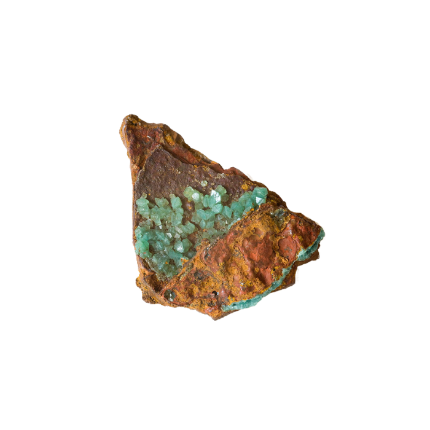
Adamite
L’Adamite surmonte les situations émotionnelles, développe le courage et réduit le stress. Elle aide aussi à éliminer le brouillard mental et la dépression, et à stimuler le système endocrinien.
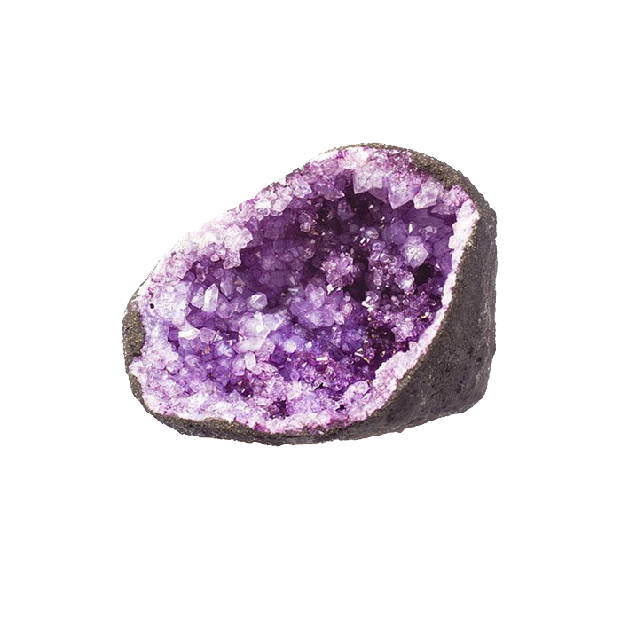
Amethyste
L’améthyste dégage une énergie apaisante et sereine qui vous aidera à vous détendre et à vous relaxer. Elle apaise le corps, réduisant les nerfs anxieux et l’agitation.
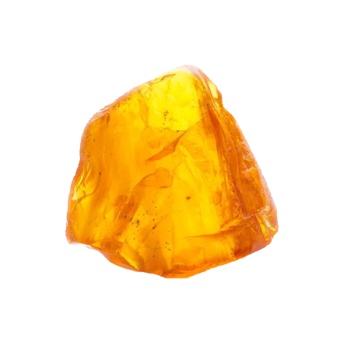
Ambre
L’ambre a des vertus apaisantes et calmantes, reconnu aussi pour ses vertus de soulagement des douleurs dentaires.
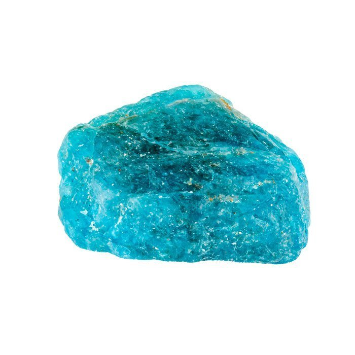
Apatite
La pierre apatite vous aidera à lutter contre les douleurs musculaires et articulaires, constitue une grande aide pour les personnes qui souffrent d’un excès de tension.
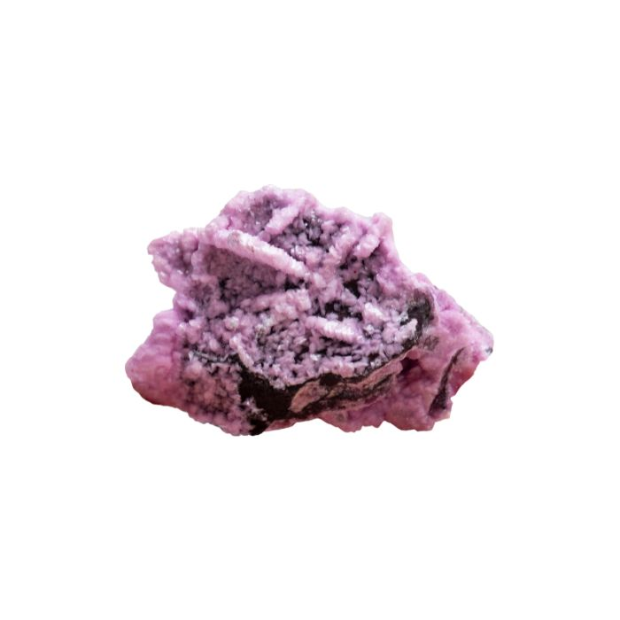
Cobaltocalcite
Cobaltocalcite possède une multitude de propriétés dont la plus intéressante : son pouvoir d’apaisement. Elle vous aide à venir à bout de vos problèmes affectifs mais peut aussi se révéler utile pour les soucis physiques.
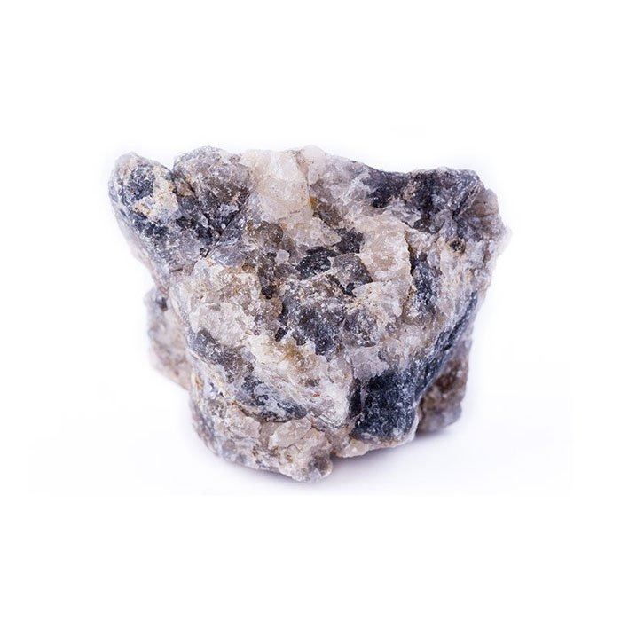
Cordierite
La Cordiérite, ou Iolite, est une pierre très bénéfique contre les addictions et pour un bon sommeil,elle favorise la fonction récupératrice du sommeil qu’elle tend à rendre plus profond.
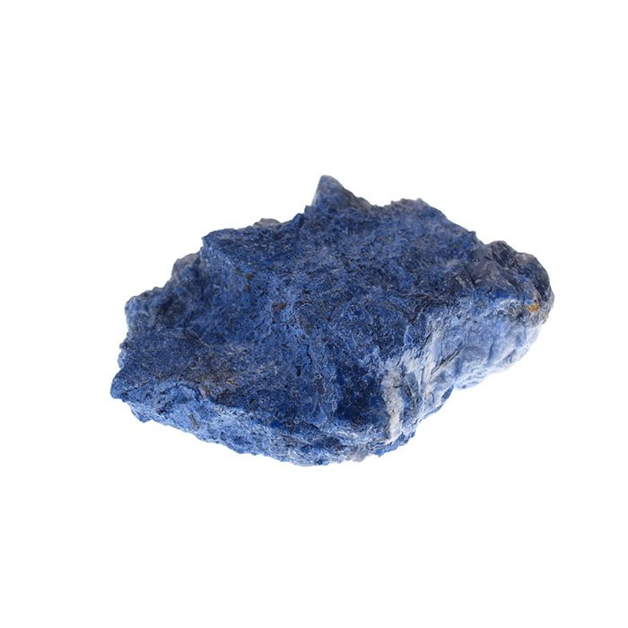
Dumortierite
La pierre dumortiérite permet une concentration accrue et une pensée plus développée et logique, grâce à la réflexion et à l’organisation des concepts et des informations qu’elle apporte.
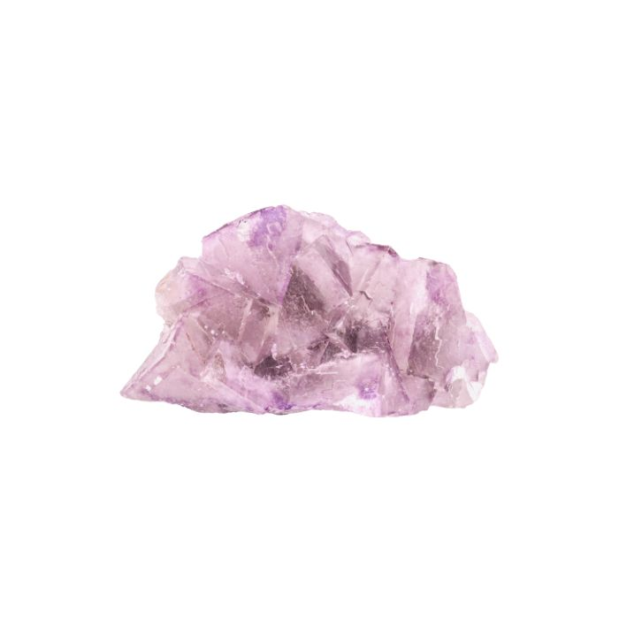
Fluorite Rose
La pierre a des effets bénéfiques sur la guérison émotionnelle. Si vous êtes angoissé, que vous vous sentez faible ou que vous avez vécu des événements traumatisants, elle peut vous apaiser sur le long terme.
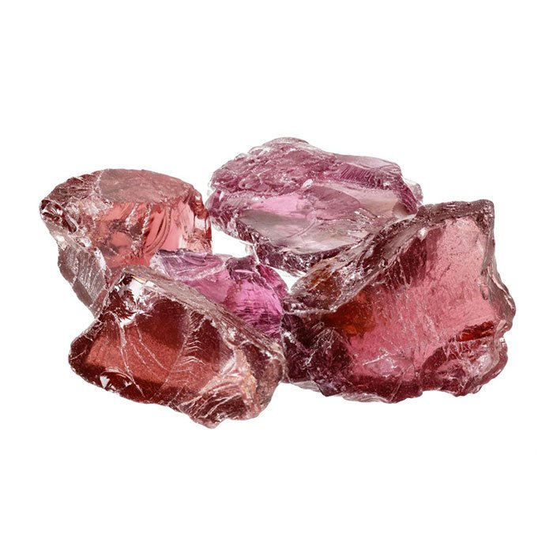
Grenat
grenat a de nombreuses propriétés, apportant ainsi joie et force de vivre, énergie, courage, force motrice et assurance. On lui associe la puissance de la volonté.
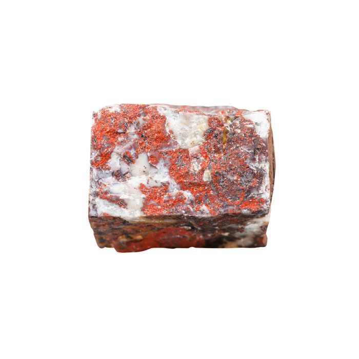
Jaspe bréchique
Le jaspe bréchique est parfait pour retrouver un état d’esprit serein, joyeux et optimiste. Grâce à ses propriétés apaisantes, la pierre jaspe bréchique peut vous être d’un grand soutien dans les périodes de stress, de changement et de remise en question.
Jaspe Mookaite
Le jaspe mookaite agit et apporte des bienfaits sur la circulation sanguine, la digestion, l’activité rénale et le système immunitaire. Son impact sur le foie et les reins facilite l’élimination des différents déchets et toxines.
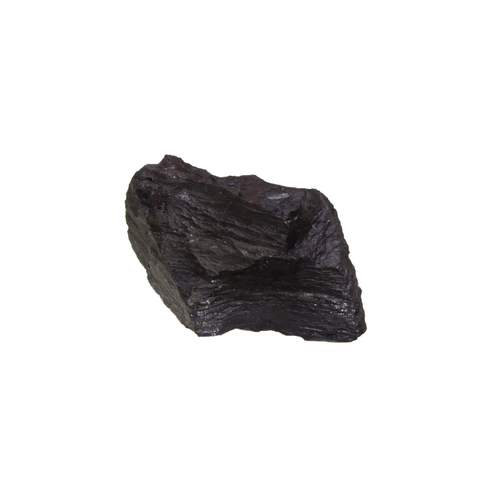
Jaspe noir
Le Jaspe Noir est apprécié comme pierre d’énergie, d’activité et d’enracinement. Il permet de stimuler et de fortifier l’esprit. Ce minéral noir marque l’expression de sa personnalité.
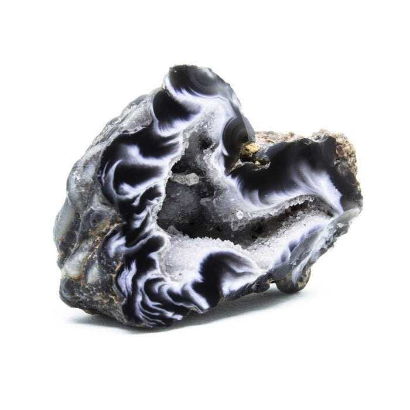
Onyx
La pierre onyx est un véritable bouclier contre les pensées et les énergies négatives. En diminuant le stress et l’anxiété au quotidien, elle permet de retrouver confiance en soi et de remplacer les ruminations mentales par des pensées positives.
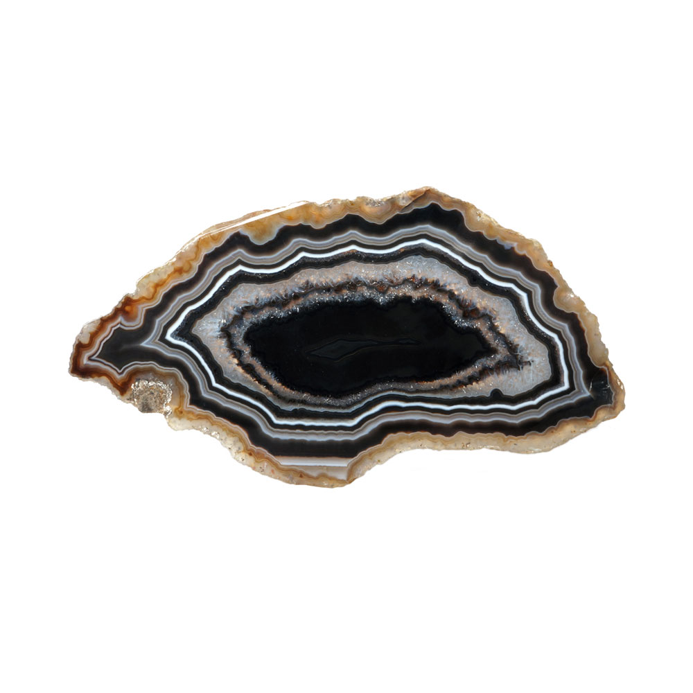
Onyx noir
L’onyx est une pierre de protection. Il est donc naturel qu’elle renforce l’immunité, et grace à son action drainante sera très bénéfiques aux allergiques et aux personnes souffrant d’addiction.
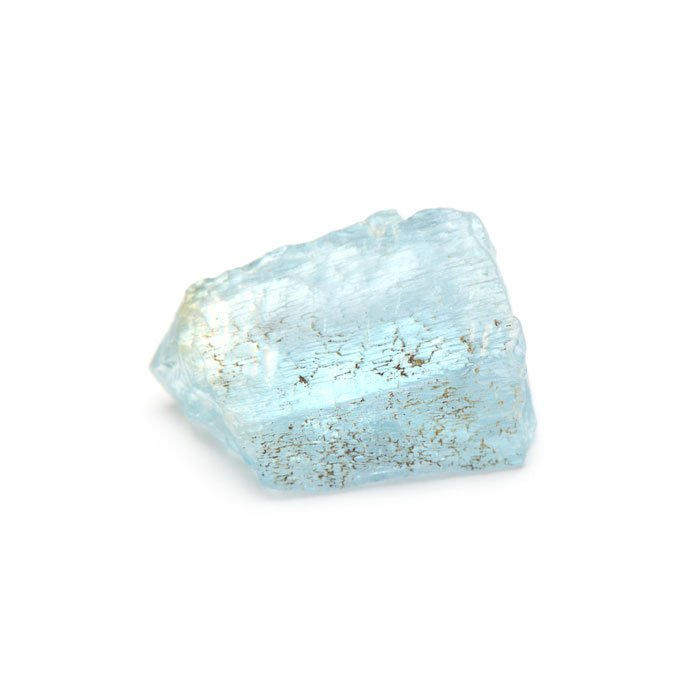
Topaze bleue
La topaze a plusieurs bienfaits naturels : elle lutte contre les troubles du sommeil, calme les maux de gorge, favorise la tolérance, prévient l’apparition des dilatations permanentes des veines et détend les nerfs.
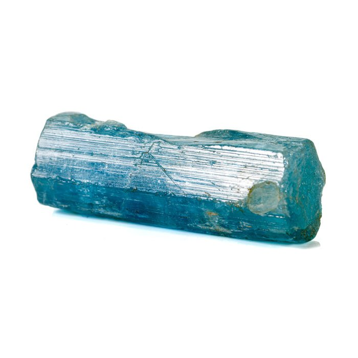
Tourmaline bleue
Les caractéristiques électriques de la tourmaline bleue en font une véritable source de protection de tes ondes nocives environnantes. Portée sous forme de bracelet par exemple, elle confère une certaine protection contre les émissions des appareils électriques du quotidien.